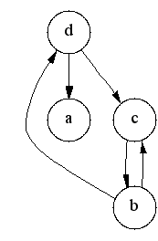
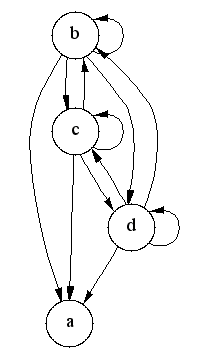

template <typename Graph, typename GraphTC,
typename P, typename T, typename R>
void transitive_closure(const Graph& g, GraphTC& tc,
const bgl_named_params<P, T, R>& params = all defaults)
template <typename Graph, typename GraphTC,
typename G_to_TC_VertexMap, typename VertexIndexMap>
void transitive_closure(const Graph& g, GraphTC& tc,
G_to_TC_VertexMap g_to_tc_map, VertexIndexMap index_map)
グラフ G = (V,E) の推移閉包は、Gが u から vへの道 (少なくとも一つの辺の) を含んでいれば、そして含んでさえいれば、
E* が辺 (u,v) を含むようなグラフ
G* = (V,E*) である。
transitive_closure() 関数は入力されたグラフ g を
推移閉包グラフ tc に変形する。
このアルゴリズムの実装のために Vladimir Prus に感謝する。
boost/graph/transitive_closure.hpp
有向グラフで、ここに Graph の型は Vertex List Graph でかつ Adjacency Graph のコンセプトのモデルでなければならない。OUT: GraphTC& tc
有向グラフで、ここに GraphTC の型は Vertex Mutable Graph でかつ Edge Mutable Graph のコンセプトのモデルでなければならない。
これは入力されたグラフの各頂点を出力の推移閉包グラフ中の新しい相応 する頂点にマップする。IN: vertex_index_map(VertexIndexMap& index_map)
これは各頂点を [0, num_vertices(g)) の範囲において整数にマップする。 このパラメータはデフォルトのカラー・プロパティ・マップが使われた時にのみ 必要である。VertexIndexMap の型は Readable Property Map のモデルでなければならない。マップの値型は汎整数型でなければならない。 グラフの頂点記述子型はマップのキー型として使用できる必要がある。
デフォルト: get(vertex_index, g)
|  |  |
transitive_closure() 関数を実装するのに使われているアルゴリズムは 強成分の検出 [50, 53] に基づいている。 次の議論はアルゴリズムと、いくつかの関連がある背景理論を述べている。
頂点 v の後継集合 (Succ(v)によって示す)は、頂点 v から到達可能な頂点の 集合である。推移閉包 G* 中の v に隣接している頂点の集合は、 元のグラフ G中の v の後継集合に等しい。推移閉包を計算する事は、 G 中の各頂点の後継集合を計算する事と等価である。
同じ強成分中の全ての頂点は、同じ後継集合を持つ。 (というのは、各頂点は成分中の 他の全ての頂点から到達可能だからである。) それゆえ、強成分中の全ての頂点 の後継集合を計算するのは冗長な事である。成分毎にただ一つの頂点の後継集合 を計算すれば十分である。
以下はアルゴリズムの概要である:
for each vertex u in G' in reverse topological order
for each vertex v in Adj[u]
if (v not in Succ(u))
Succ(u) = Succ(u) U { v } U Succ(v) // "U" は集合和を意味する
頂点 u の後継集合を計算する際に、Adj[u] 中の各頂点の後継集合
が既に計算されていることを保証するために、頂点は逆トポロジカル順序にあると
見なされる。
集合和操作の最適化された実装はアルゴリズムのパフォーマンスを改善する。 それゆえこの実装は chain decomposition [51,52] を使用する。 Gの頂点は連鎖 Z1, ..., Zk に分割される。 ここで各連鎖 Zi は G 中の道であり、連鎖中の頂点は 増加していくトポロジカル番号を持つ。後継集合 S はその時連鎖による 交差の集合によって表される。すなわちS = Ui=1...k (Zi & S) である。 各交差は S 中にもある道 Zi 中の最初の頂点によって 表すことができる。なぜなら残りの道も同様に S 中にある事が保証されている からである。ベクトルの i 番目の要素が S の交差中の最初の頂点を Zi によって蓄えている時、交差の集合はそれゆえ長さ k のベクトルとして表される。
二つの後継集合の和を計算する事、つまり S3 = S1 U S2 は、その後次の操作によって時間 O(k) の 内に計算され得る:
for i = 0...k
S3[i] = min(S1[i], S2[i]) // min は頂点のトポロジカル番号を比較する
| Copyright © 2001 | Jeremy Siek, Indiana Univ.(jsiek@cs.indiana.edu) |
Japanese Translation Copyright © 2003 Takashi Itou
オリジナルの、及びこの著作権表示が全ての複製の中に現れる限り、この文書の複製、利用、変更、販売そして配布を認める。このドキュメントは「あるがまま」に提供されており、いかなる明示的、暗黙的保証も行わない。また、いかなる目的に対しても、その利用が適していることを関知しない。
このドキュメントの対象: Boost Version 1.30.0
最新版ドキュメント (英語)